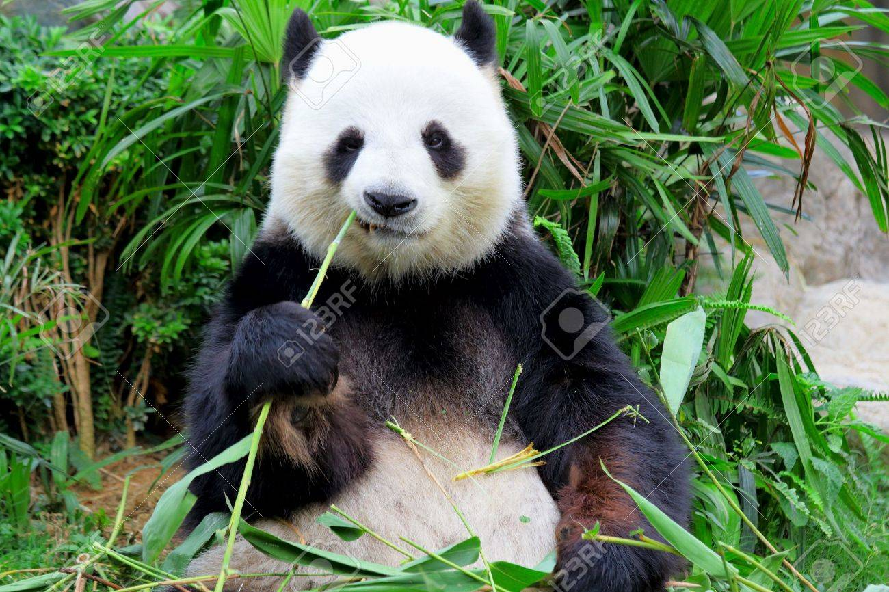

About
The giant panda, Ailuropoda melanoleuca, is a bear. It lives in south central China. Although it belongs to the order Carnivora, the panda's diet is 99% bamboo. Pandas in the wild occasionally eat other grasses, wild tubers, or even meat in the form of birds, rodents or carrion. In captivity, they may get honey, eggs, fish, yams, shrub leaves, oranges, or bananas along with specially prepared food. The giant panda lives in a few mountain ranges in central China, mainly in Sichuan province, but also in the Shaanxi and Gansu provinces. As a result of farming, deforestation and other development, the panda has been driven out of the lowland areas where it once lived.
Giant pandas are bears. They have black and white fur. The black fur is on their ears, around their eyes, on their legs, and on their shoulders. Giant pandas are about the size of an American black bear. They are about 3 feet (91 cm) tall at the shoulder when they are standing on all four legs. They are about 6 ft (180 cm) long. Males weigh up to 251 pounds (114 kg) in the wild. Females usually weigh less than 220 pounds (100 kg).
Food and water
Bamboo is the main diet of panda . Ninety-nine percent of the food they eat is bamboo. They eat as much as 40 pounds (18 kg) of bamboo every day. They spend 10 to 16 hours every day looking for food and eating it. Bamboo is a grass. Sometimes giant pandas eat other grasses. They also eat little rodents or musk deer babies (fawns). In zoos, giant pandas eat bamboo, sugar cane, vegetables, and fruit. Giant pandas get a lot of water from the bamboo they eat. They need more water though. They drink from the fresh water streams and rivers in the mountain. Melting snow high in the mountains runs into these streams and rivers.
Cubs

Giant pandas are ready to have babies (cubs) when they are between the ages of four and eight years. They may be able to have babies until about age 20. Female pandas are ready to have a baby only once a year. This is in the springtime. There are only two to three days she is ready for a baby. Calls and scents bring the males and female pandas to each other. Female pandas may give birth to two young. Usually only one lives. Giant panda cubs may stay with their mothers for up to three years. Then they leave her for a life of their own.
Giant pandas and people
Today, the giant panda is a symbol for China. It is protected by the Chinese government. Killing a giant panda is a crime. The giant panda may become extinct. It will die out if the forests of bamboo continue to disappear. People outside of eastern Asia did not know about the giant panda until 1869. The first "Westerner" to see a live panda was a German zoologist in 1916. In 1936, Ruth Harkness became the first Westerner to bring a live giant panda out of China. It was a cub (baby panda) named Su-Lin. The cub was taken to live at the Brookfield Zoo in Chicago. In the 1970s, China began showing giant pandas in zoos in the United States and Japan as a type of diplomacy. This happened until 1984, when China changed how this was done. Starting in 1984, China would allow zoos to keep the giant pandas for 10 years, but the zoo would have to pay China up to $1,000,000 each year. Also, the zoo would have to agree that any cubs born would belong to China.
17 cities outside China have zoos with giant pandas:
North America
- Washington, D.C., United States
- San Diego, California, United States
- Memphis, Tennessee, United States
- Atlanta, Georgia, United States
- Mexico City, Mexico
- Toronto, Ontario, Canada
Europe
- Copenhagen, Denmark
- Berlin, Germany
- Vienna, Austria
- Madrid, Spain
- Edinburgh, Scotland
Asia
- Chiang Mai, Thailand
- Tokyo, Japan
- Kobe, Hyōgo, Japan
- Shirahama, Wakayama, Japan
- Karachi, Sindh, Pakistan
- Seoul, South Korea
Endangered animal
The giant panda is an endangered species. It may become extinct. In 2013, it was estimated that there were less than 2,500 mature giant pandas living in the wild. Illegal hunting is no longer a problem. Hunting for pandas is a crime. The penalties are harsh if you hunt pandas. The greatest threat to survival is the loss of living areas. People are ruining the areas where pandas live. They are cutting down trees. They are building farms. Groups of pandas are forced to live in small areas. They are isolated. They cannot mix other panda groups. Giant pandas eat bamboo. Sometimes the bamboo dies off. At one time, pandas could move to an area where bamboo was still growing. Moving has become more and more difficult. People are living and working in panda areas. Pandas cannot move about as freely as they once did.